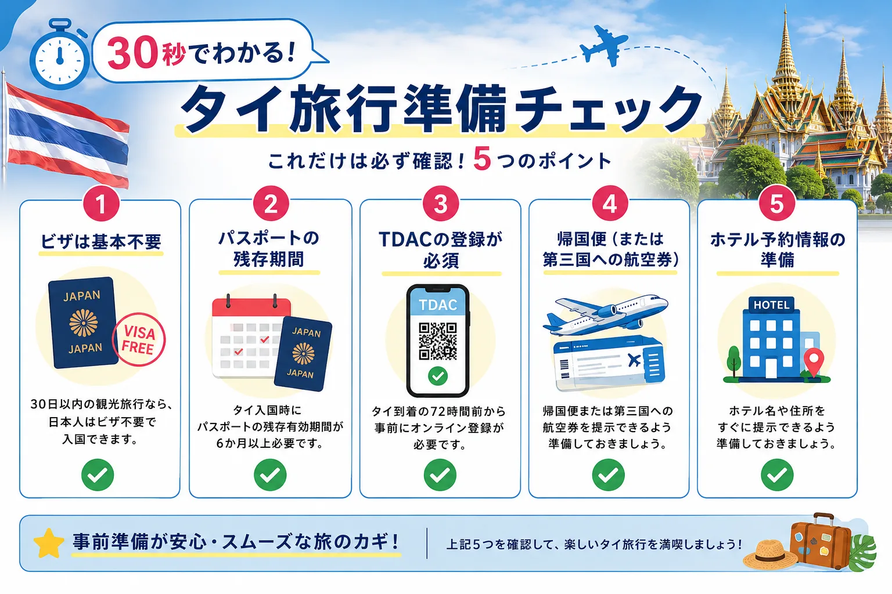
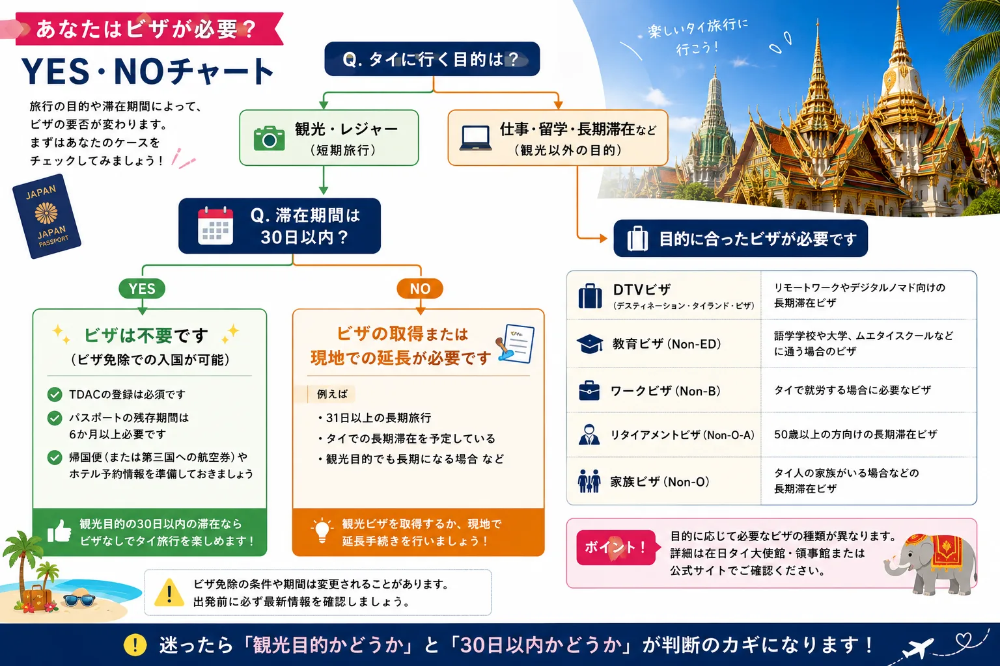
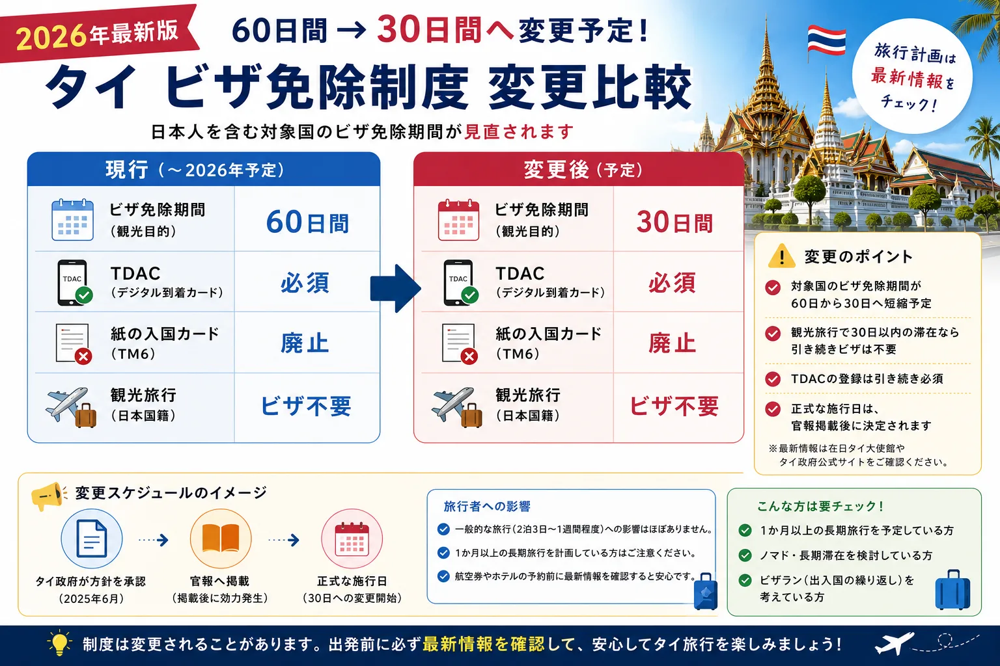
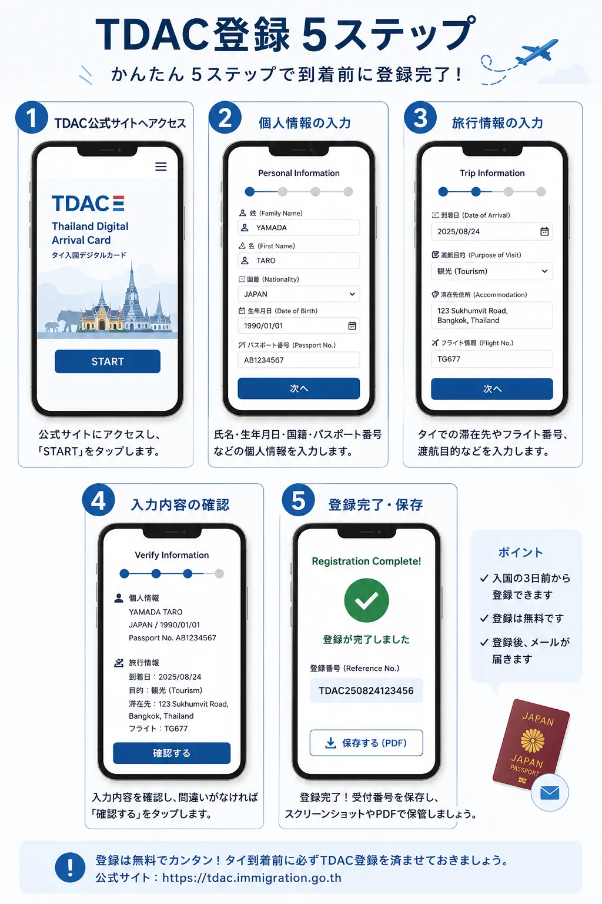
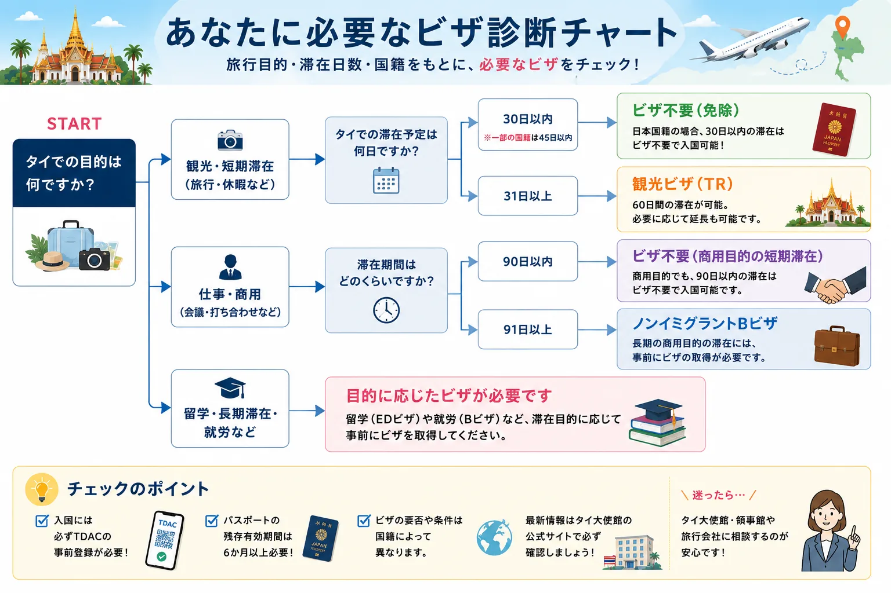

タイ旅行にビザは必要？2026年最新の入国条件をわかりやすく解説
「タイ旅行ってビザは必要？」初めてタイへ行く方はもちろん、以前旅行したことがある方でも、最近この疑問を持つ人が増えています。
その理由は、タイの入国ルールがここ数年で大きく変わっているからです。紙の入国カードは廃止され、現在はTDAC（Thailand Digital Arrival Card）の登録が必須になりました。さらに、2026年にはビザ免除制度の見直しも予定されており、インターネット上には古い情報も数多く残っています。
この記事では、「ビザは必要？」「TDACって何？」「パスポートは何か条件がある？」といった疑問を一つずつ解決しながら、タイ旅行前に知っておきたい入国条件を初心者向けに解説します。
制度は変更されることがあります。出発前にはTDAC公式サイトや在日タイ大使館などの公式情報も確認してください。
30秒でわかる！タイ旅行の入国条件
旅行前に覚えておきたいポイントは、実はそれほど多くありません。まずは次の5つだけ確認しておきましょう。
- 30日以内の観光旅行なら、基本的にビザは不要
- パスポートの残存有効期間は6か月以上必要
- TDAC（タイデジタル到着カード）の登録が必須
- 帰国便（または第三国への航空券）を用意する
- ホテル予約情報をすぐ提示できるようにする
この5つを準備しておけば、多くの旅行者は問題なくタイへ入国できます。

「ビザ不要＝何も準備しなくていい」というわけではありません。現在はTDACの事前登録が必要になっているため、以前タイへ旅行したことがある方も最新ルールを確認しておきましょう。
タイ旅行にビザは必要？
結論から言うと、日本国籍で短期観光を目的とする旅行であれば、多くの場合ビザを取得する必要はありません。
2泊3日、3泊4日、5泊7日、1週間程度の一般的な旅行なら、通常はビザなしで入国できます。そのため、旅行会社のツアーや個人旅行でも、多くの方はビザを申請せずにタイへ渡航しています。
ただし、「観光目的」であることが前提です。滞在日数や旅行目的によっては、別のビザが必要になるケースもあります。
ビザが必要になるケース
- 30日を超える長期滞在
- タイ国内で働く
- 語学学校へ留学する
- デジタルノマドとして長期間滞在する
- リタイアメント目的で生活する
一般的な旅行者には関係ありませんが、長く滞在したい、働きながら暮らしたいと考えている方は、観光ビザ以外の制度も確認しておきましょう。

【2026年最新】タイのビザ免除制度が変わる
タイ旅行を調べると、「日本人は60日間ビザ不要」という情報を目にすることがあります。これは2026年7月時点では有効な情報ですが、今後は変更される予定です。
タイ政府は、日本を含む対象国のビザ免除期間を60日から30日へ短縮する方針を承認しています。正式な施行日は官報掲載後に決定されますが、これから旅行を計画する方は、30日以内の旅行を前提に準備しておくと安心です。
一般的な旅行であれば影響はほとんどありません。一方で、1か月以上の長期旅行を予定している方は、今後の制度変更を必ず確認しておきましょう。
| 項目 | 現行 | 変更後（予定） |
|---|---|---|
| ビザ免除期間 | 60日 | 30日 |
| TDAC | 必須 | 必須 |
| 紙の入国カード | 廃止 | 廃止 |
| 観光旅行 | ビザ不要 | ビザ不要 |

インターネット上には「60日間ビザ不要」という記事が多く残っています。制度変更のタイミングでは情報が混在しやすいため、旅行前にはタイ政府や在日タイ大使館などの最新情報も確認することをおすすめします。
日本人がタイへ入国するための3つの条件
ビザが不要でも、タイへ入国するためには満たしておくべき条件があります。特に重要なのは次の3つです。
1. パスポートの残存有効期間は6か月以上
最も重要なのがパスポートです。タイへ入国する時点で、6か月以上の残存有効期間が必要とされています。有効期限がまだ残っているように見えても、6か月を切っている場合は搭乗や入国を断られる可能性があります。
また、査証用の空白ページも必要になるため、ページ数が少なくなっている場合は早めに更新を検討しましょう。
2. 帰国便（または第三国への航空券）
タイの入国審査では、帰国便の提示を求められる場合があります。必ず毎回確認されるわけではありませんが、片道航空券だけで渡航すると、不法滞在を疑われる可能性もあります。
航空券はスマートフォンですぐ表示できるようにしておくと安心です。
3. 滞在先ホテルの情報
ホテル名や住所を確認されることもあります。予約確認メールや予約アプリをすぐ開けるように準備しておきましょう。
初めてのタイ旅行では、ホテルの英語表記をスクリーンショットで保存しておくと、入国審査だけでなくタクシーやGrabを利用するときにも役立ちます。
タイ入国に必要なものチェック
- パスポート（残存期間6か月以上）
- TDAC登録後のQRコード
- 帰国便または第三国への航空券
- ホテル名・住所・予約確認書
- 滞在資金を確認できるカードや現金
ここまでの内容を押さえたら、次は現在のタイ旅行で必須となるTDACを確認しましょう。
【必須】TDAC（タイデジタル到着カード）とは？
2025年5月から、タイへ入国するすべての外国人を対象にTDAC（Thailand Digital Arrival Card）の登録が義務化されました。
以前は飛行機の中で配られていた紙の入国カード（TM6）を記入していましたが、現在は廃止されています。その代わりに導入されたのがTDACです。
現在は、タイへ入国する前にオンラインで登録し、発行されたQRコードを入国審査で提示する仕組みになっています。
ビザは不要でも、TDACは必須。これが現在のタイ旅行で覚えておきたいポイントです。
TDACはいつ登録する？
TDACはいつでも登録できるわけではありません。登録できるのは、タイ到着予定時刻の72時間（3日前）からです。
| タイ到着日 | 登録開始日の目安 |
|---|---|
| 8月24日 | 8月21日 |
| 9月5日 | 9月2日 |
早く登録しようとしても受付されないため、到着日の3日前になったら手続きを始めましょう。登録時間は5〜10分程度です。
TDAC登録で準備するもの
- パスポート：氏名やパスポート番号を入力します。
- 航空券：便名や到着日を入力します。
- ホテル情報：ホテル名だけでなく住所も必要になります。
- メールアドレス：登録完了後、QRコードが送られてきます。
ホテル予約サイトの情報をそのままコピーできるようにしておくと、入力ミスを防げます。
【図解】TDAC登録の流れ
実際の登録手順はとてもシンプルです。画面に沿って入力するだけなので、初めてでも数分で完了します。

- TDAC公式サイトへアクセス
- 個人情報を入力
- パスポート情報を入力
- 旅行情報・宿泊先情報を入力
- 登録内容を確認して提出
- QRコードを保存
登録が完了すると、メールでQRコードが届きます。スマートフォンの充電切れや通信トラブルに備えて、スクリーンショット、PDF保存、印刷のいずれかをしておきましょう。
TDAC登録でよくある失敗
- 出発日ではなく、タイへ到着する日を入力する
- ホテル名だけでなく住所まで準備しておく
- 登録完了後はQRコードをすぐ保存する
- 出発当日ではなく、日本にいる間に登録する
タイ到着後の流れ
初めて海外旅行へ行く方は、飛行機を降りたあと何をすればいいのか不安になるかもしれません。基本的な流れは次のとおりです。
タイ空港 到着からホテルまでの流れ
- 飛行機到着
- 入国審査
- 荷物受け取り
- 税関
- 到着ロビー
- SIM・eSIM設定
- ATM・両替
- Grab・電車でホテルへ
流れを事前に知っておくだけで、空港で迷うことが少なくなります。通信準備はeSIMガイド、現金準備はタイ旅行で現金はいくら必要？もあわせて確認しておきましょう。
入国審査で聞かれること
日本人旅行者の場合、入国審査は数分で終わることがほとんどです。英語が苦手でも、短い単語で答えれば問題ありません。
| 質問 | 回答例 |
|---|---|
| What is the purpose of your visit? | Sightseeing. |
| How long will you stay? | Five days. |
| Where are you staying? | ○○ Hotel. |
状況によっては、帰国便、ホテル予約確認書、滞在資金を証明できるものの提示を求められる場合があります。毎回確認されるわけではありませんが、スマートフォンですぐ表示できる状態にしておくと安心です。
こんな場合はビザが必要！目的別にわかるタイのビザ一覧
日本人が30日以内の観光目的でタイへ旅行する場合、多くのケースではビザは必要ありません。しかし、滞在期間や目的によっては、事前にビザを取得しなければならないケースがあります。

観光ビザ（TR）
一般的な旅行よりも長くタイへ滞在したい方向けのビザです。1か月以上旅行したい、タイを拠点に東南アジアを周遊したい、ビザ免除期間では足りない場合に検討します。
DTV（デスティネーション・タイランド・ビザ）
2024年に新設された比較的新しいビザです。海外企業に勤務している方や、リモートワーカー・フリーランス向けに設けられました。ただし、タイ国内企業で働くことはできません。
教育ビザ（Non-ED）
タイ語学校や大学、ムエタイスクールなどへ通う方向けのビザです。語学留学を検討している方はこちらが対象になります。
リタイアメントビザ（Non-O-A）
50歳以上でタイへの長期滞在を希望する方向けのビザです。一定額以上の預金や収入などの条件があります。
ワークビザ（Non-B）
タイ企業へ就職する場合に必要なビザです。就労許可証（ワークパーミット）なども関係するため、旅行とは別の制度として考えましょう。
一般的な旅行者が調べるのは観光ビザまでで十分です。DTVやワークビザなどは、長期滞在を考え始めたタイミングで詳しく調べることをおすすめします。
ビザの種類や条件は変更されるため、必要な方はThailand e-Visa公式サイトも確認してください。
タイ入国で知っておきたい注意点
電子タバコは持ち込まない
日本では使用している方も多い電子タバコですが、タイでは取り扱いが大きく異なります。電子タバコ（IQOS・VAPEなど）は持ち込みや所持に関して厳しい規制があります。
違反した場合は、没収だけでなく、罰金や法的措置の対象となる可能性もあります。日本では問題ないから大丈夫と考えず、旅行中は持参しないようにしましょう。
ビザラン目的の出入国は注意
以前は短期間で出入国を繰り返す「ビザラン」が行われることもありました。現在は規制が強化されており、特に陸路でのビザ免除入国には回数制限があります。
長期滞在を考えている場合は、正規のビザを取得することが大切です。
タイ旅行の入国・ビザに関するよくある質問
30日以内の旅行なら本当にビザは不要ですか？
観光目的で30日以内の滞在であれば、多くの日本人旅行者はビザ不要で入国できます。ただし、TDACの登録やパスポートなどの条件は満たす必要があります。
子どももTDAC登録が必要ですか？
対象となる旅行者は、子どもを含めて登録が必要です。家族旅行の場合は、出発前に全員分の登録を済ませておきましょう。
QRコードはスクリーンショットでも大丈夫？
基本的には問題ありません。ただし、スマートフォンの故障や充電切れも考えられるため、印刷したものも持参すると安心です。
ワクチン接種証明書は必要ですか？
現在の制度では、多くの旅行者にワクチン接種証明書の提出は求められていません。ただし、入国条件は変更されることがあるため、旅行前には必ず最新情報を確認してください。
帰国便は必ず必要ですか？
入国審査で提示を求められる場合があります。スムーズに入国するためにも、帰国便または第三国への航空券を用意しておきましょう。
英語が苦手でも入国できますか？
もちろん大丈夫です。Sightseeing、Five days、ホテル名程度の簡単な英語で十分伝わります。
出発前チェックリスト
旅行前日に、最後の確認をしておきましょう。
| カテゴリ | 確認するもの |
|---|---|
| 書類 | パスポート、TDAC登録完了、QRコード保存、航空券、ホテル予約確認書 |
| お金 | クレジットカード、現金、デビットカード |
| スマートフォン | eSIM設定、モバイルバッテリー、Googleマップ、Grabアプリ |
| 到着後すぐ使うもの | ホテル住所、QRコード、パスポート、ATM・両替場所 |
現地で使うお金の準備はタイでおすすめの両替所5選、ATM手数料が気になる方はCashmallow ATM手数料ガイドも確認しておくと安心です。
まとめ｜タイ旅行は事前準備が安心への第一歩
タイ旅行は、日本人にとって比較的渡航しやすい海外旅行先です。観光目的の短期旅行であれば、多くのケースでビザは必要ありません。
一方で、以前とは異なりTDAC（タイデジタル到着カード）の登録が必須となり、ビザ免除制度も見直しが進められています。だからこそ、旅行前には最新情報を確認し、余裕を持って準備することが大切です。
- 日本人の短期観光なら基本的にビザ不要
- パスポートは残存有効期間6か月以上必要
- TDACは到着72時間前から登録できる
- QRコードは必ず保存する
- 帰国便・ホテル情報はすぐ提示できるよう準備する
- 制度変更が予定されているため、最新情報を確認する
しっかり準備を整えれば、入国手続きは決して難しいものではありません。安心してタイ旅行を楽しんできてください。